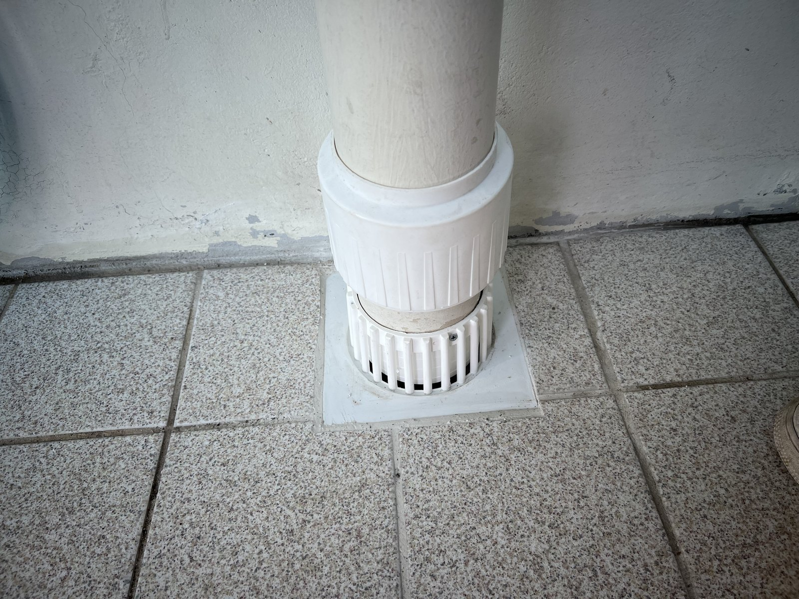
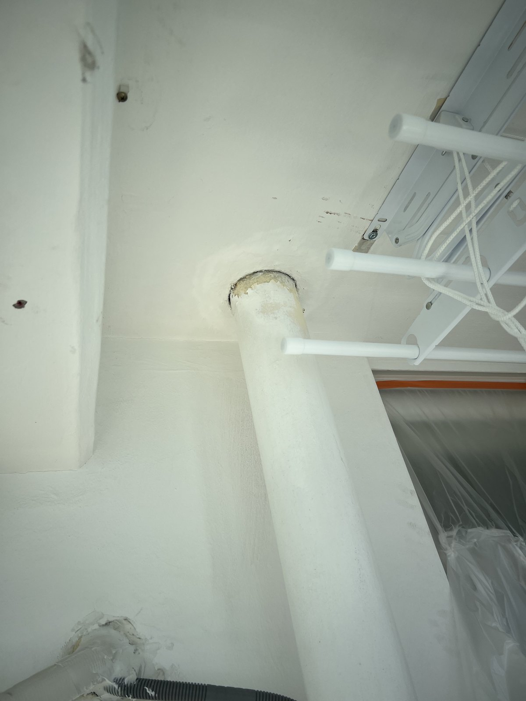
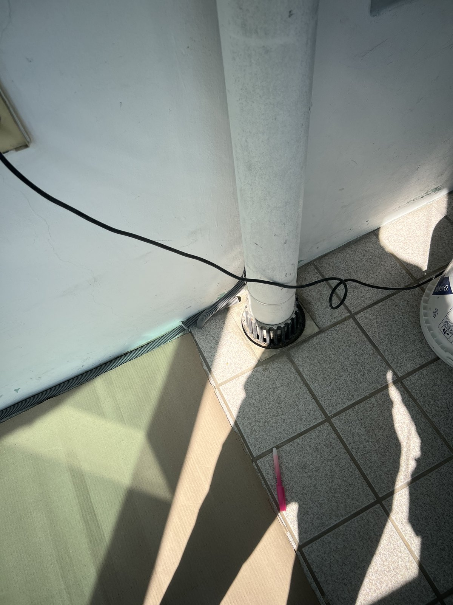
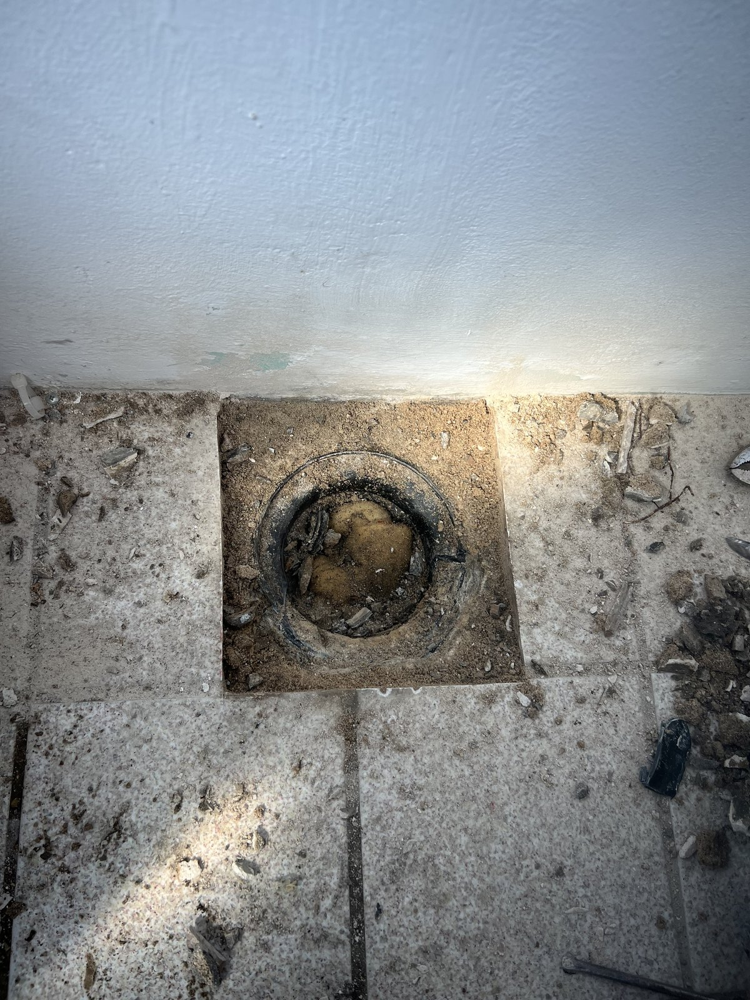
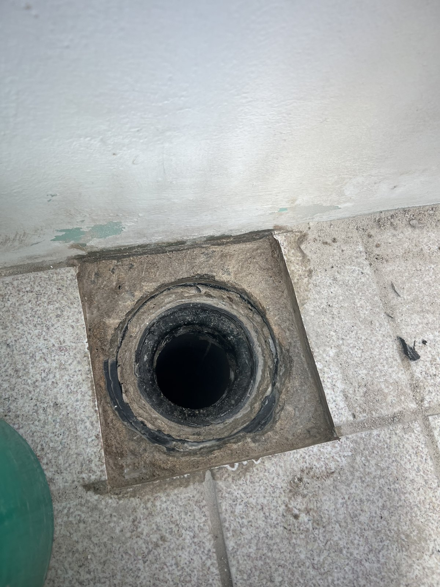
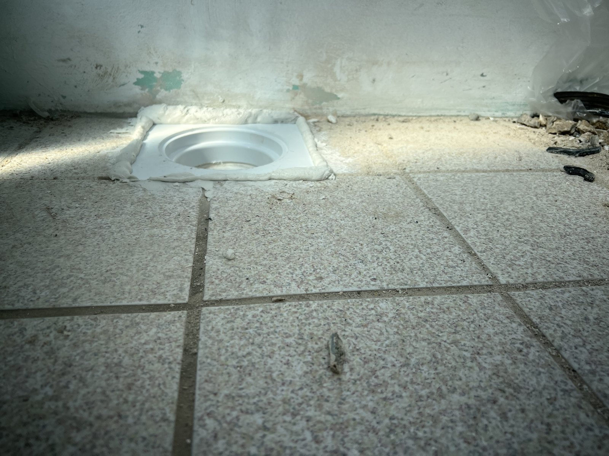
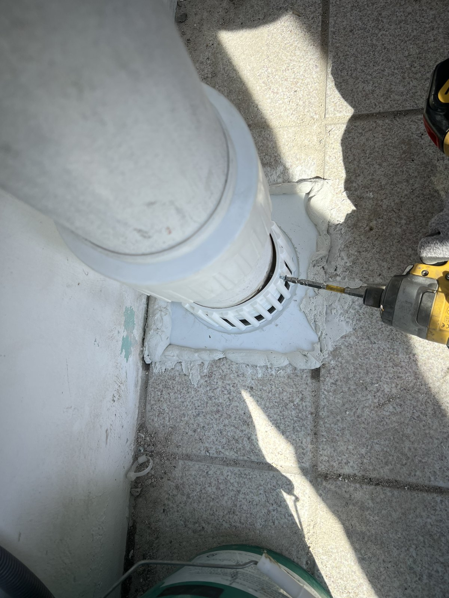
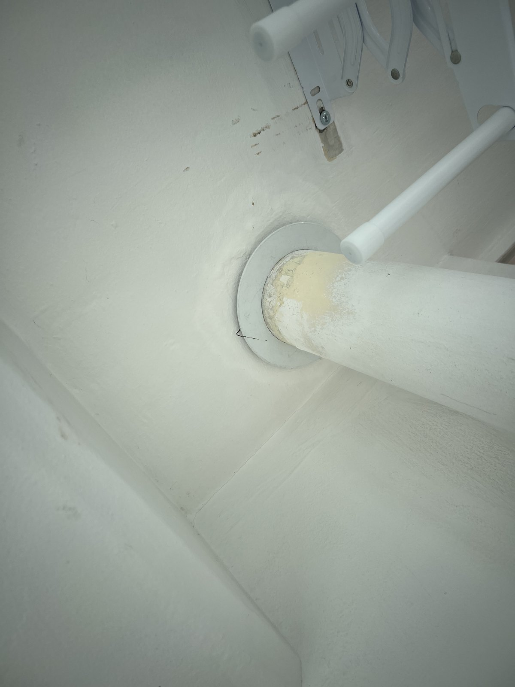
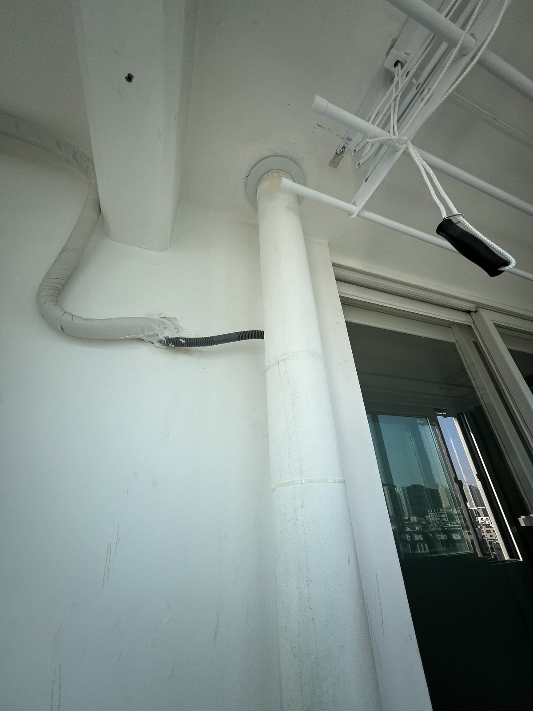
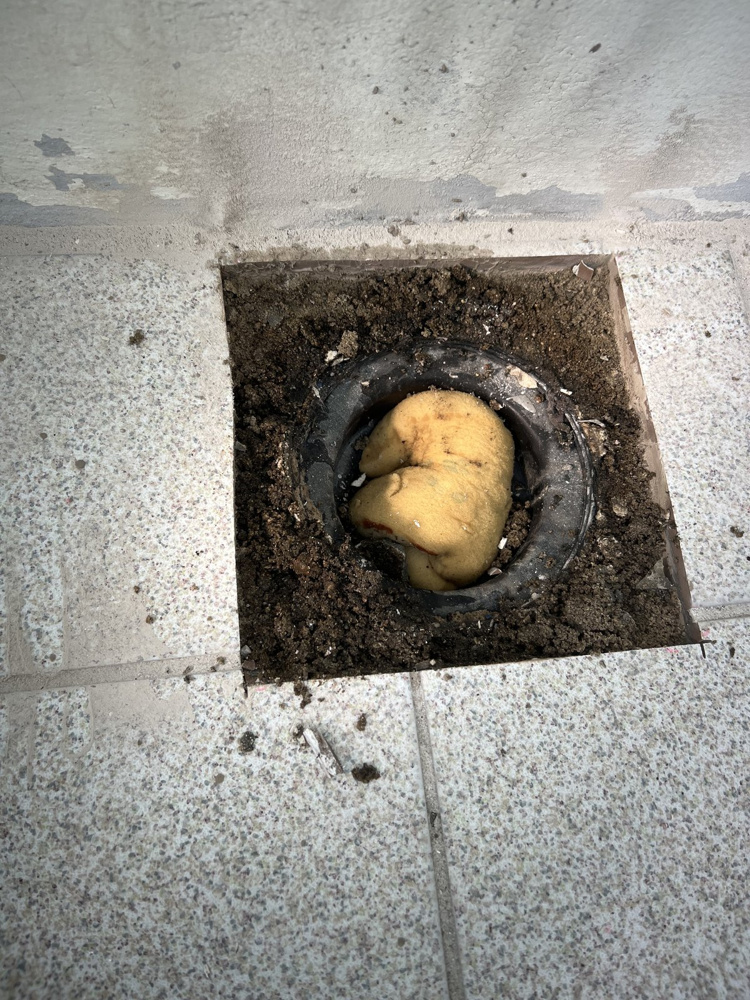

대전 베란다 우수관 보수｜진잠타운 상·하부 연결부 시공

현장 작업 한눈에 보기
- 현장
- 대전 진잠타운아파트 베란다
- 문제
- 수직 우수관·바닥 연결부
보수 작업 기록 - 작업
- 바닥 배수구 정리·연결 부속 설치
천장 관통부 마감 - 결과
- 상·하부 연결과 마감 상태 기록
통수시험 결과는 별도 확인 필요
대전 진잠타운아파트 베란다 우수관의 바닥 연결부와 천장 관통부를 보수한 사례입니다. 기존 관 분리부터 배수구 정리, 새 연결 부속과 마감 설치까지 상·하부 작업을 나누어 소개합니다.
천장과 바닥, 두 연결 위치를 나누어 보수했습니다
대전 진잠타운아파트 베란다에서 수직 우수관과 바닥 연결부를 보수했습니다. 기존 관을 분리하고 바닥 배수구를 정리한 뒤 연결 부속을 설치했으며, 천장 관통부도 마감했습니다.
사진에서는 위쪽 천장과 아래쪽 바닥을 나누어 보시면 작업 범위가 명확해집니다. 첫 사진은 수직관이 천장을 통과하는 지점의 기존 상태입니다. 사진만으로 누수 원인이나 책임 범위를 단정하지는 않습니다.

바닥과 만나는 기존 연결부
관을 따라 내려오면 베란다 타일 바닥과 맞닿는 하부 연결부가 나옵니다. 위쪽 관통부와 구분해 바닥 테두리의 상태를 확인할 수 있습니다.

관을 분리하고 바닥 주변 정리
수직관을 분리한 뒤 바닥 개방부 주변을 정리하는 단계입니다. 작업 중 이물질이 들어가지 않도록 개구부를 임시로 막아 둔 모습이 보입니다.

새 부속을 연결하기 전 바닥 배수구 정리
기존 부속을 분리한 뒤 원형 배수구와 주변 사각 테두리가 드러난 상태입니다. 다음 사진의 새 부속 설치 모습과 비교하면 바닥에서 손본 범위를 볼 수 있습니다.
상담할 때도 관만 가까이 찍기보다 주변 타일과 배수구가 함께 보이도록 촬영해 주세요.

바닥 높이에 맞춘 새 부속
흰색 연결 부속을 바닥에 맞추고 주변을 정리한 장면입니다. 타일과 부속 사이의 경계가 사진에 함께 보입니다.

수직관과 하부 부속 연결
수직관을 하부 부속에 연결한 뒤의 모습입니다. 바닥 쪽 배수 그릴과 관의 연결 위치를 가까이 기록했습니다.

상부 작업 — 천장 관통부 마감
관이 천장을 통과하는 위치에 마감 부속을 맞췄습니다. 앞서 보신 하부 연결 부속과는 작업 위치가 다릅니다.
우수관 보수를 문의하실 때는 천장 쪽인지 바닥 쪽인지 먼저 알려 주세요. 두 위치를 함께 보여주는 전체 사진이 있으면 공사 범위를 이야기하기 좋습니다.

작업 후 수직관의 전체 위치
베란다 천장과 창가 쪽 수직관을 함께 담았습니다. 근접 사진으로 본 부속이 공간 안에서 어디에 있는지 확인할 수 있습니다.

같은 현장의 별도 연결부 — 앞 사진과 구분
같은 진잠타운아파트 작업으로 확인된 다른 사진 묶음입니다. 바닥 연결부를 열고 주변을 정리하는 장면입니다.
앞의 개구부와 동일한 위치라고 확인된 자료는 아니므로, 두 장면을 하나의 전후 사진으로 연결하지 않았습니다.

하부 연결 상태와 상담 시 확인할 범위
별도 연결부에도 새 부속과 배수 그릴이 설치된 모습입니다. 이번 사례에서 확인되는 결과는 상·하부 연결과 마감 상태입니다. 통수시험 결과와 총 소요시간은 자료가 없어 확정하지 않습니다.
비슷한 증상이 있다면 물이 보이는 위치와 발생 시점을 함께 알려 주세요. 상부 관통부, 바닥 연결부, 주변 마감 중 어떤 부분을 손볼지 현장을 확인한 뒤 안내합니다.